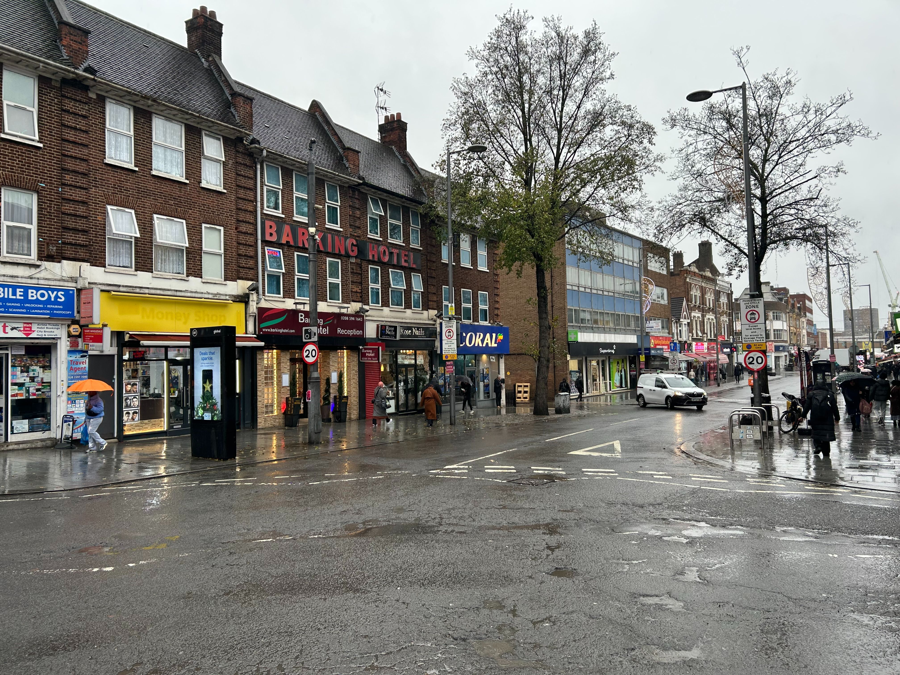

Concrete Foundation Installation
We install concrete foundations for new builds, extensions and domestic construction projects. Our work covers excavation, ground preparation, reinforcement and concrete pouring.
Get a Quote
We're specialists in residential concrete foundations in Barking, We're one of the most trusted concrete contractors in IG11
With over 15 years experience in concrete foundation work we've become specialists in our approach for concrete foundations, We install foundations for homes, extensions, garages, garden rooms and structural builds.
We deliver engineered concrete systems ensuring Barking residents and businesses get structural work designed for long term strength, stability, and precision finishing built to handle Barking ground conditions and all building layouts.
Our focus is residential concrete foundations and light commercial projects — from small domestic bases to full structural foundation systems. Every installation is built using reinforced methods, correct sub-base preparation, and industry standard curing processes.


We specialise in residential & light commercial concrete foundations across Barking, delivering strong and stable structural bases for homes, extensions and outbuildings. Our installations are designed around load-bearing performance, ground conditions, and long-term durability.
Many residential properties require upgraded or new concrete foundations due to soil movement, ageing sub-bases, or structural expansion. Our systems ensure correct preparation, reinforcement, and finishing to meet modern residential construction standards.
We carry out concrete foundation installations, concrete bases, reinforced concrete work and foundation repairs for residential construction projects.
We install concrete foundations for new builds, extensions and domestic construction projects. Our work covers excavation, ground preparation, reinforcement and concrete pouring.
Get a QuoteWe install concrete bases for sheds, garages, garden rooms and outbuildings. Each base is prepared, formed and finished to provide level, stable support for the structure.
Get a QuoteWe carry out foundation repairs and replacement work where existing foundations have deteriorated or require structural improvement. Work is planned around the condition of the existing foundation and ground.
Get a QuoteWe install reinforced concrete slabs for garages, workshops, extensions and domestic buildings. Our installations include sub-base preparation, formwork, reinforcement where required and accurate concrete finishing.
Get a QuoteWe install steel-reinforced concrete systems for residential foundations and structural construction. Reinforcement is installed to the required specification to support structural loads and improve crack resistance.
Get a Quote


With over 15 years of residential concrete foundation experience and hundreds of completed installations, we understand the structural demands, soil conditions and preparation methods required for long-term performance across Barking properties. Our team works on everything from garage bases and garden structures to reinforced residential foundations and light commercial groundwork projects.
Every installation is completed using engineered preparation methods, reinforced concrete systems and precision levelling processes designed to improve structural reliability and minimise future movement issues. We partner with experienced groundwork teams, structural specialists and professional concrete installers to ensure every project is completed to high operational and construction standards.
Residential Concrete Projects Completed
Years Of Residential Foundation Experience
Square Metres Of Concrete Installed
Focus On Structural Stability & Ground Preparation
After 15 years working on foundations across Barking, we know proper preparation makes all the difference. Here's how we handle each job.
We visit the site, check the ground and work out what the job needs.
You'll get a clear quote and know exactly what work is involved.
We dig to the required depth and prepare the ground properly before any concrete goes in.
We fit reinforcement where specified, then pour and compact the concrete to the required levels.
We finish the concrete properly and allow the time needed for it to gain strength.
We check the finished work, clear up and explain when the next stage can begin.
A lot of residential properties across Barking include older extensions, previous groundwork modifications and varying garden levels which can all affect excavation depth, foundation positioning and site preparation requirements. Properties throughout IG11 often require careful planning before installation begins, particularly where older construction work or existing hardstanding areas are present.
We regularly complete residential concrete foundation projects involving uneven layouts, restricted working areas, existing concrete removal and structural preparation for new extensions or outdoor buildings. Careful site assessment and preparation planning helps ensure installation work is completed efficiently while maintaining accurate foundation layouts and consistent structural support.


We work with established concrete supply operations and batching facilities supporting residential and light commercial foundation projects across Barking.
Using professionally supplied concrete systems helps ensure consistent mix quality, controlled delivery scheduling and reliable performance for structural foundation installations.
Depending on the project requirements, concrete may be supplied using volumetric mixing systems or ready-mix concrete deliveries designed to support efficient pouring and accurate volume management. This allows our foundation installations to maintain consistent structural standards across all our residential and commercial concrete work.

Residential concrete foundations are commonly installed for detached outdoor structures requiring stable long-term ground support and reliable structural positioning. These types of projects often require accurate levelling, reinforced support methods and controlled sub-base preparation to help reduce movement and improve long-term durability.
Some residential concrete installations are designed to support concentrated external weight loads where structural stability and surface strength are important. Reinforced concrete systems help distribute weight more evenly while improving resistance against sinking, movement and surface cracking over time.
Concrete foundations are regularly used for outdoor residential improvement projects involving new structures, expanded living areas and functional external spaces. Proper excavation, compaction and reinforcement methods help create stable groundwork capable of supporting long-term structural use across varying ground conditions.
Certain reinforced concrete systems are installed in areas experiencing regular vehicle movement or increased structural loading requirements. These projects often require stronger concrete mixes, improved reinforcement methods and carefully prepared sub-base systems designed for durability and long-term load-bearing performance.
Outdoor residential workspaces and utility structures often require level reinforced concrete foundations capable of supporting daily use and long-term structural stability. Controlled installation methods and accurate preparation help improve durability while maintaining consistent foundation performance over time.
Reinforced concrete slabs are frequently installed for residential construction projects requiring stable load-bearing support beneath structural builds and external developments. These systems are designed to improve weight distribution, minimise future movement and provide long-term structural consistency.
It depends on the structure, ground conditions and building requirements. We assess the site and work to the required foundation depth.
What's underneath matters just as much as the concrete itself. Poor ground preparation can lead to sinking, movement and cracking later on.
Reinforcement helps control cracking and strengthens concrete where required. It won't fix poor ground preparation or unsuitable foundations.
Poor ground conditions, drainage problems and incorrect installation are common causes. Cracking and movement often point to problems underneath.
Concrete gains strength over time, with 28 days commonly used as a strength benchmark. When building can continue depends on the job and specification.
Yes. We're used to Barking properties with narrow side passages, steps and awkward access. We plan the excavation and concrete delivery around the space available.
That depends on the structure and the loads involved. We use concrete suited to the project's requirements, rather than treating every foundation the same.
Yes. We also handle suitable light commercial work, including workshop foundations, reinforced slabs and storage building bases.
Yes. We can break out and remove damaged or unwanted concrete before preparing the ground for the new installation.
It does. Heavy rain, frost and hot weather all need managing. We plan pours around conditions and protect the concrete while it cures.
Contact us for residential concrete foundation installation, slab work or structural base construction.
Speak To A Foundation Installer